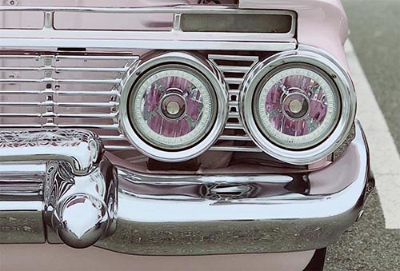

Edit the style, not the page. But how?
You can make this page look better without even touching the page itself. All of the magic will happen in a css file that you will create.
The following will be a broken icon unless the image file is actually located in the correct place on your computer. You should create a folder called 'images' right next to this index.html file. Place the JPG file inside of of the images folder.
For Lab 3, the HTML content is this page itself. Your job is to create the CSS. The styling requirements are given in Assignments Lab 3 Description.
Warm up by browsing through some pages at Montana State University for an example of consistent styling.
To get started with this lab, you will need to download the content and put it into the correct subfolders, which you will create. The two subfolders will be called 'css' and images. If you've been following along on this page, you've already seen how to get the images folder set up.
The following requirements should all be accomplished by modifying the main.css stylesheet. Make sure you it exists in a folder called css, which should be in the same folder as your index.html file and your images folder.
Do not modify this index.html document.